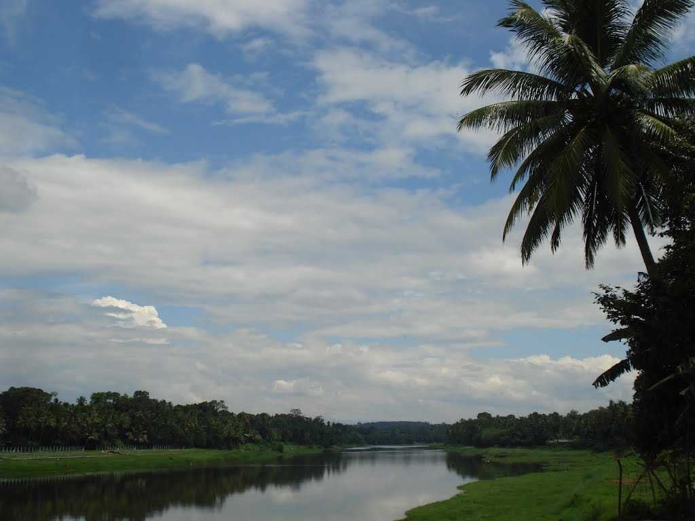
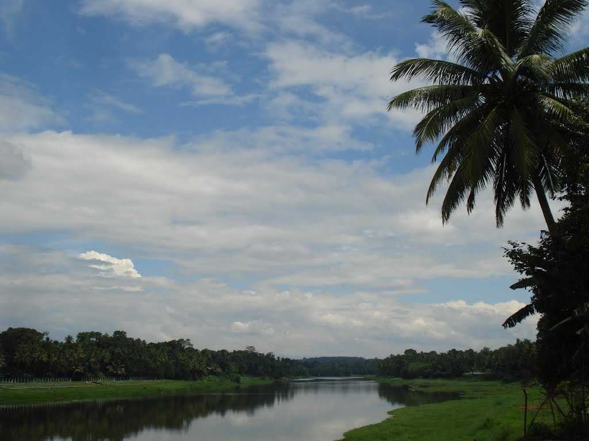
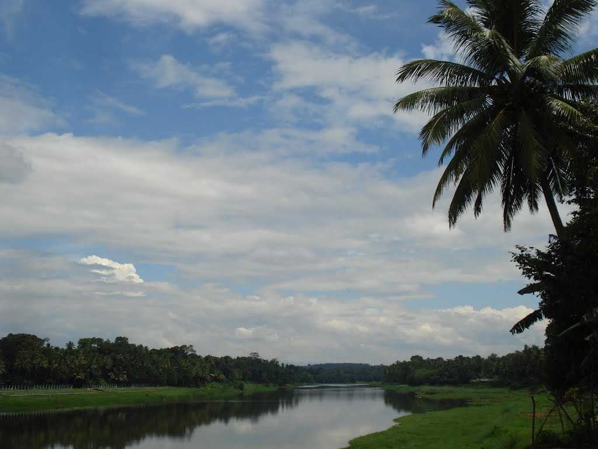
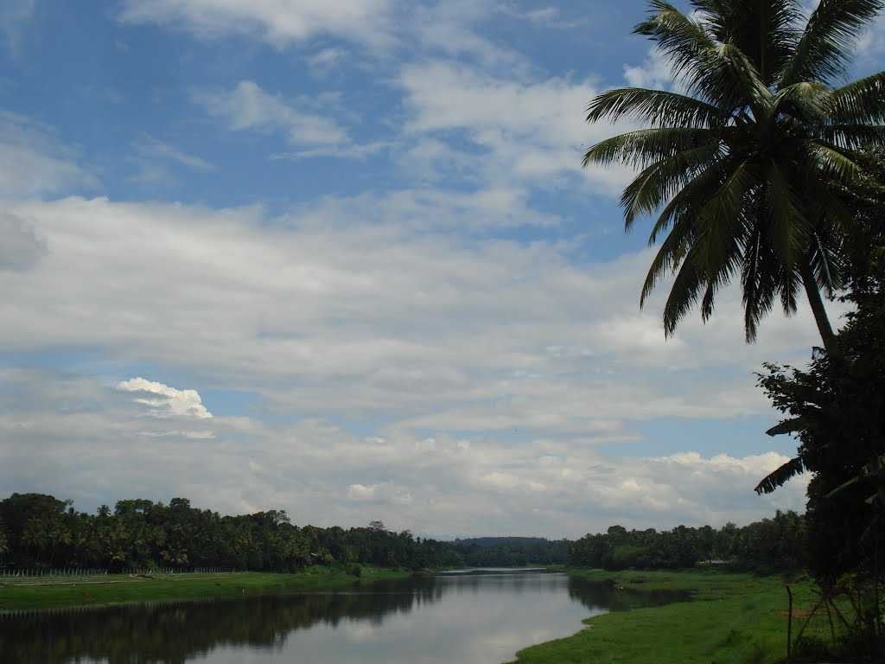

 

Pathanamthitta
district is known as the 'Headquarters of Pilgrimage Tourism', of the Kerala State. Situated near the Western Ghats and bordered by the hills, Pathanamthitta district is a treat to eyes with its vast unending stretches of forests, rivers and rural landscapes.
Pathanamthitta is a municipality situated in the Central Travancore region in the state of Kerala, India, spread over an area of 23.50 km². It is the administrative capital of Pathanamthitta district. The town has a population of 37,538. The Hindu pilgrim centre Sabarimala is situated in the Pathanamthitta district; as the main transport hub to Sabarimala, the town is known as the 'Pilgrim Capital of Kerala'. Pathanamthitta District, the thirteenth revenue district of the State of Kerala, was formed with effect from 1 November 1982 vide G.O. No.1026/82/RD dated 29 October 1982, with headquarters at Pathanamthitta. Forest covers more than half of the total area of the District. Pathanamthitta District ranks the 7th in area in the State.

At a distance of 15 Km from Pathanamthitta, 53 Km from Alappuzha & 57 Km from Kumarakom, Aranmula is a Aranmula Snake Boat Race, also known as Aranmula Vallamkali is a popular boat race held in the never ending Kerala Backwaters. This is an annual boat race held in Aranmula district of Kerala during the Onam festival in the month of August-September. It is also known as Uthrittathi Boat Race. Aranmula Vallamkali owes its origin to the Sri Parthasarathy Temple situated on the banks of the Pamba River. The Vallamkali, associated with the annual festival of Sri Parthasarathy, is usually held on the last two days of the festival. The event that attracts tourists from all over the world is conducted not to win any trophy or prize but to celebrate the anniversary of the Sri Krishna idol installation, the main deity at the Aranmula Parthasarathy Temple. It is conducted in the Pamba River in front of the temple to commemorate the crossing of the river by Lord Krishna. The snake boats assemble near the Parthasarathy Temple before the race begins. Festivities take over the whole town as well as the waters. The boat race is famous worldwide and has become an icon of Kerala, attracting thousands of tourists every year during the festival of Onam. This annual boat race during Onam attracts tourists from all over India and the world. The snake boats are called 'Palliyodams' and their structures resemble snakes. These boats are around 100 feet in length, have narrow fronts with raised hoods and rear portions towering at a height of around 20 ft. Around 40 boats participate in this annual event and each boat accommodates about 120 people including helmsmen, oarsmen and singers. Colorful and vivid flags are set on the boat's head and colorful parasol in the center offers a beautiful spectacle. The race begins in the afternoon after the morning prayers and rituals. Songs called 'Vanchipattu' are sung during the races. Groups of men and singers who sing stridently in a rhythmic manner gather along the banks of the rivers and in snake boats. The speed and the graceful rhythmic movements of the boat offer an amazing show. After the water sport there is an elaborate feast in the Aranmula temple. Aranmula Vallamkali, organised under the sponsorship of Palliyoda Seva Sangam, is more of a water festival than a competition. For the past few years, the Central Tourism Ministry has been providing financial assistance for preserving and promoting this legendary snake boat race.
At a distance of 70 Kms from Pathanamthitta, Kakki Reservoir is a scenic dam built across Pamba River. The reservoir is surrounded by valleys and forest of great natural beauty.
The forest surrounded by the reservoir has rich wildlife population, like Tigers, Elephants, Deers etc. January to May is the best time to visit this place.
There is very limited public transportation available to reach this place. It's advisable to hire private vehicle from Pathanamthitta.
Gavi is a village in Pathanamthitta district , Kerala, India. It is located 28 km southwest of Vandiperiyar, a town in Idukki on N.H 220, the highway connecting Kollam and Madurai. Spread across the beauty of Periyar Tiger Reserve, Gavi is a quiet, beautiful and pristine forest haven.
Gavi is an Eco-Tourism a project of the Kerala Forest Development Corporation located in Pathanamthitta district, Kerala. Gavi, located in Pathanamthitta district offers its visitors activities like trekking, wildlife watching, outdoor camping in specially built tents, and night safaris
At a distance of 70 km from Pathanamthitta, 158 km from Kochi, and 178 km from Trivandrum, Sabarimala is a revered Hindu shrine located in the Pathanamthitta district of Kerala. It is one of the famous places of pilgrimage in Kerala as well as in India. Dedicated Lord Ayyappan, Sabarimala temple is one of the oldest temples in India, with a history of more than 5000 years old. It is one of the most visited pilgrim centers in the world with an estimated 45 - 50 million devotees every year, and among the top places to visit in Kerala. The temple is situated amid 18 hills, at an altitude of about 3000 feet. It is believed that Lord Parasurama installed the idol of Ayyappa at Sabarimala. The pilgrimage season begins in November and ends in January (the temple remains closed during the rest of the year except for the first five days of each Malayalam month). The devotees following Ayyappa Vratam (Ayyappa Maala - a 41 days Vratam with strict restrictions) carry Irumudi Kettu containing traditional offerings to the Lord. Mandalapooja (Nov17th) and Makaravilakku (Jan 14th) are the important events of the temple. Makara Jyothi (a celestial star) appeared on Jan 14th is the most crowded occasion of this temple. Sabarimala temple has no restrictions on caste and religion. The temple is open to males of all age groups, but women between 10-50 years of age group are NOT allowed into the temple. Sabarimala can be reached by an 8 km trek from Pamba, which is the nearest road point to the temple. Booking of Sabarimala Virtual Q Coupon opened on 11th January 2017. Sabarimala Virtual Q helps devotees to reach Sannidhanam without waiting in the long queue usually formed at Pampa. Pilgrims can book a slot in the queue for darshan using the Virtual Q website, sabarimalaq.com, which was developed by Kerala Police to facilitate the pilgrimage to Sabarimala.